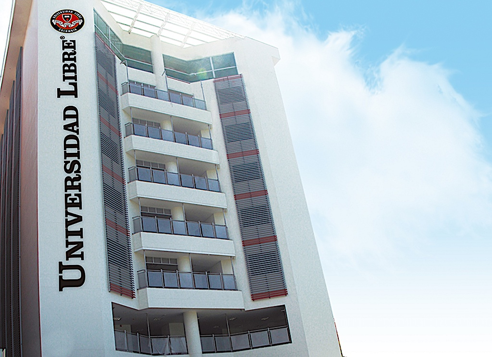
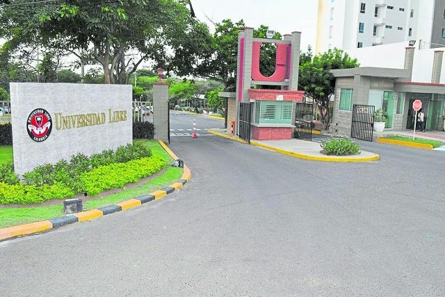

MISIÓN |
VISIÓN |
La Universidad Libre como conciencia crítica del pais y de la época, recreadora de los conocimientos científicos y tecnólogicos, proyectados hacia la formación integral de un egresado acorde con las necesidades fundamentales de la saciedad, hace suyo el compromiso de: - formar dirigentes para la sociedad. (los sectores dirigentes de la sociedad). - propender por la identidad de la nacionalidad colombiana respetando la diversidad cultural, regional y étnica del país. - procurar la preservación del medio ambiente y el equilibrio de los recursos naturales. |
La Universidad Libre es una corporación de educación privoda, que propenos por la construcción permanente de un mejor pais y de una sociedad democrática pluralista tolerante e impulso el desarrollo sostenible, iluminada por los principios filosóficos y éticos de su fundador con liderazgo en los procesos de investigación, ciencia tecnologia y solución pacifica de los confictos |
|  |  |
| Unilibre: sede centro | Unilibre: sede norte |
Se Parte De La Comunidad unilibrista
En la Universidad Libre seccional barranquilla, te ofrecemos los mejores espacios para tu proceso de estudio. Contamos con aulas de clases ambiaentadas con todo lo necesario para tu aprendisaje; entre ello contamos con videobeam para las presentaciones de los docentes o si debes realizar una ponencia a tus compañero en medio de una claase. tambien contamamos con laboratosios adecuados con las mejores y ultimas tecnologias en los procesos que miraras a medida que avances en la carrera, tales como laboratorio de fisica, robotica, quimica, procesos industriales. Contamos con la mejor plantilla de docentes de la ciudad y el area metropolitana, para que tengas un aprendizaje excelente y si deseas investigar por tu cuenta algun tema la biblioteca sera tu mejor aliada, contamos con toda la libreria necesaria para tus estudios.